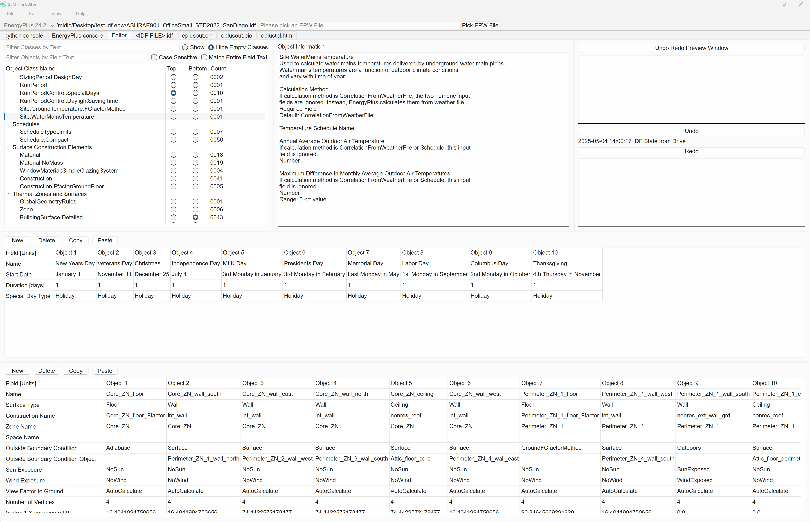
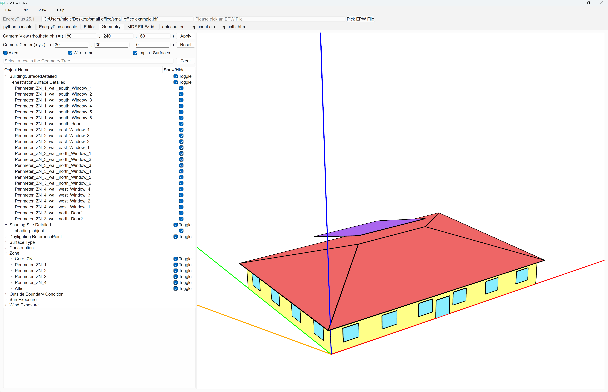
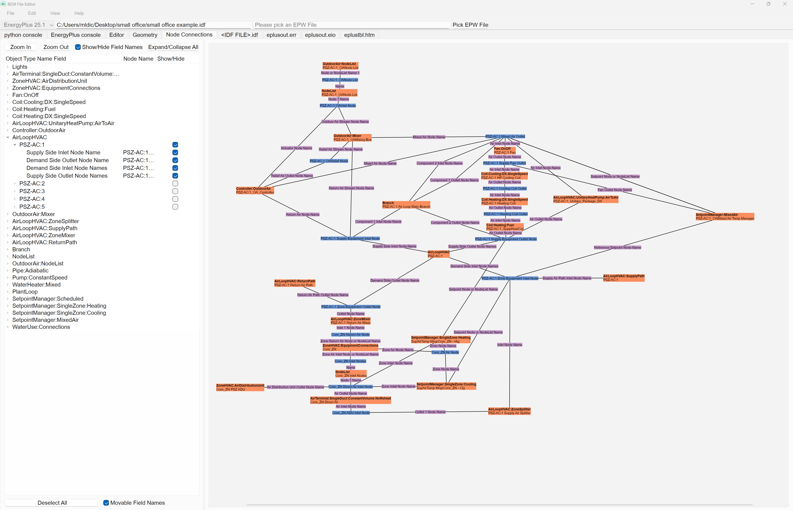
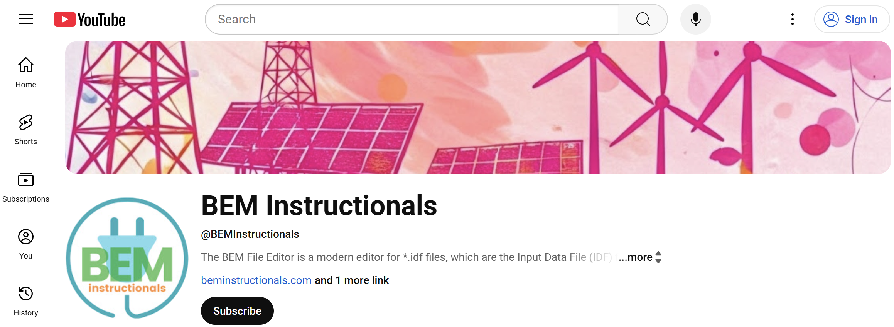
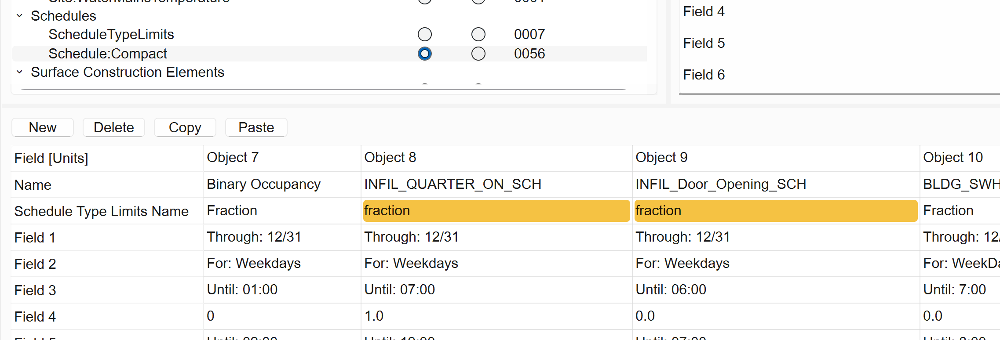

The BEM File Editor is a modern editor for *.idf files, which are the Input Data File (IDF) files for the EnergyPlus whole building energy simulation program. The BEM File Editor installer does not contain any version of the EnergyPlus simulation program. Each version of EnergyPlus you want to use must be installed separately.



The BEM File Editor main.py code is licensed under a BSD-3-Clause license. See the LICENSE file for details.
The code is available on the BEM Instructionals GitHub repo.
The BEM Instructionals logo is licensed under a Creative Commons Attribution-ShareAlike 4.0 International license.
PySide6 is licensed under the GNU Lesser General Public License version 3.
Windows 11 x86_64 BEM-File-Editor-Setup.exe
macOS Sequoia ARM64 BEM-File-Editor.dmg
Ubuntu 24.04.2 LTS amd64 BEM-File-Editor.deb
This option is useful for users with employers that limit what can be installed on their computer and for employers that automatically delete unapproved applications.
Download BEM-File-Editor-1.3.0.zip
Steps are to install Pyside6 using "pip install pyside6", then "python main.py" to start the BEM File Editor. (Using Python 3.13 is recommended for compatibility.)
I have tested the most on Windows 11 because that is the OS I develop on, and I do test new features on macOS and Ubuntu, but I suspect there are still some bugs and annoying behaviors lurking in the code. If you encounter a bug in the BEM File Editor, you can try viewing the console output by enabling the View->Application Settings "Show Python Console Tab" checkbox. If there is no exception thrown then I probably made a logical error in the code, in which case all you'll see in the "python console" tab is datetimes of when the BEM File Editor was opened. In both cases, please document the steps to reproduce the behavior, create an issue on the BEM File Editor GitHub repo, and I will try to fix it.
EnergyPlus is completely separate from the BEM File Editor, so if you think you've found a bug with one of the EnergyPlus programs, you can create an issue on the EnergyPlus GitHub repo.
The real purpose of this webpage is to organize the YouTube videos. Right now there is a tour of the BEM File Editor. More videos to come soon.

Unmet Hours is a forum for the building energy modeling community, mostly focusing on EnergyPlus and programs that use EnergyPlus. If you have a question, you can search for the answer, or post your own question. If you want me to receive an email notification when you post something, include "@Mitchal Dichter" in the text without the quotes. You'll know it worked if the @Mitchal Dichter text turns blue shortly after you post.
That will depend on your OS, but your computer stores a list of each default program to open specific file types when double clicked. There will be a way in your OS to choose the BEM File Editor to an open an *.idf file instead of the default IDF Editor that comes with EnergyPlus and further set the BEM File Editor as the default program to open *.idf files with.
The installers for commercial software use a code signing certificate to verify the authenticity and integrity of the software being installed. These can be purchased from certificate authorities and typically cost hundreds of dollars per year. Small open-source projects can't always afford this and the user has to go through some extra steps from the OS making sure the user trusts the software being installed.
I might purchase a code signing certificate in the future, or hopefully find a more affordable option for open-source projects, but for now you have to go through the extra steps from your OS. Just make sure to download the software directly from this webpage or the BEM Instructionals GitHub repo.
The BEM File Editor is out of beta, but there are still some features I want to implement, such as a building geometry viewer. Then there are some features from the IDF Editor that comes with an EnergyPlus installation I will likely never implement because they don't quite fit into the default behavior of PySide6 standard UI elements, or because I've never that used it before, such as File->Save Options...
However, I will take into consideration feedback from users if there is a highly desired feature.
When the EnergyPlus program is run, some temporary files are created, such as readvars.audit, and then deleted when the simulation finishes. These files have to be located somewhere, so I decided to put them in the same directory as the *.idf being simulated because the BEM File Editor should have the permissions to create, write to, and delete files in that directory. These files are simply temporary files created by the EnergyPlus program when running.
The "Fraction" and "fraction" cells actually refer to the same object, but the EnergyPlus simulation program is case insensitive for this object name in a Schedule:Compact, but that isn't true for all fields in all objects.

Rather than try to imitate the rules of the IDF Editor for which fields are case sensitive and which fields are case insensitive, I decided to treat every reference as case sensitive so that there would be some false positive, but no false negative, validation of reference names. In other words, a white cell referencing another object by name should always be correct, but an orange cell referencing another object by name signifies the name isn't an exact match but may still run without error in EnergyPlus because the name is case insensitive.
The installed files are likely being removed because the OS has flagged those files as potentially malicious, and the OS tends to error on the side of caution rather than have truly malicious software remain on your computer. This appears to be a persistent problem with software made with pyinstaller, which is what the BEM File Editor uses. This is because people who really do make malicious software will also use pyinstaller because it's so easy.
This is expected to be a reoccurring problem and each time it happens, I'll have to submit the installed files for review, wait for approval, and for your OS to receive a security update.
If you encounter this problem, please let me know and I'll try to get it fixed as soon as possible.
If you would rather have the BEM File Editor installed files remain on your computer, you can manually specify your OS to ignore them as potential malicious software.
I intentionally made the "python console" tab behavior as basic as possible because it's meant to display errors during program execution. If I had an automatic system to refresh the "python console" tab, that could stop working due to another error occurring in the software. Hence, the "python console" tab has to be manually refreshed.
The BEM File Editor was inspired by the IDF+ Editor created by Matt Doiron.
A big Thank You! to all users who document and report bugs and annoying behavior when they occur.